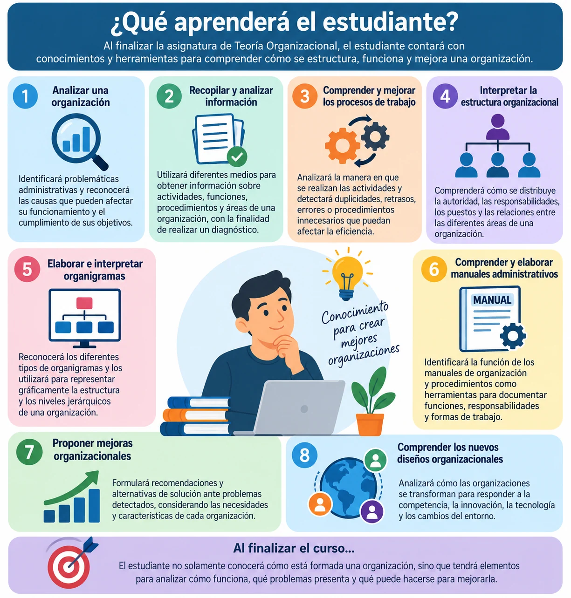

PRESENTACIÓN
1. PRESENTACIÓN DEL CURSO
Bienvenido(a) al curso de Teoría Organizacional
Las organizaciones forman parte de nuestra vida cotidiana. Empresas, universidades, hospitales, instituciones públicas y asociaciones necesitan organizar personas, actividades, recursos y procesos para alcanzar sus objetivos.
La Teoría Organizacional permite comprender cómo funcionan las organizaciones, cómo se distribuyen las responsabilidades, cómo se desarrollan sus procesos de trabajo y de qué manera pueden identificarse problemas y establecer mejoras.
A lo largo de este curso estudiaremos herramientas que permiten analizar una organización desde una perspectiva práctica. Aprenderemos a identificar problemáticas organizacionales, recopilar y analizar información, estudiar el trabajo de oficina, diseñar procesos, elaborar organigramas y comprender la utilidad de los manuales administrativos.
También analizaremos los nuevos diseños organizacionales y algunas de las estrategias que utilizan las empresas para responder a los cambios tecnológicos, económicos y competitivos de su entorno.
¿Por qué es importante estudiar Teoría Organizacional?
Una organización puede contar con buenos recursos financieros, instalaciones, tecnología y personal capacitado; sin embargo, si sus funciones no están claramente definidas, existe duplicidad de actividades, la comunicación es deficiente o sus procesos están mal diseñados, difícilmente podrá alcanzar sus objetivos de manera eficiente.
Por esta razón, estudiar una organización implica comprender no solamente qué hace, sino también cómo está organizada, cómo trabaja y qué puede mejorar.
Durante el curso relacionaremos los conceptos teóricos con situaciones que pueden presentarse en organizaciones reales, buscando desarrollar una visión analítica y orientada a la solución de problemas.
Reflexiona:
¿Qué podría suceder en una empresa donde nadie tiene claramente definidas sus funciones y varias personas realizan las mismas actividades?
OBJETIVO DEL CURSO
Objetivo del curso
Al finalizar el curso, el estudiante será capaz de comprender y analizar el funcionamiento de las organizaciones, identificando su estructura, procesos de trabajo y principales problemáticas administrativas.
Asimismo, aplicará herramientas para realizar estudios organizacionales, analizar actividades y procesos, elaborar organigramas y manuales administrativos, así como proponer alternativas de mejora que contribuyan al cumplimiento de los objetivos y a la competitividad de la organización.
El curso busca que el estudiante desarrolle una visión analítica, organizada y orientada a la solución de problemas, comprendiendo que las estructuras y procesos organizacionales deben adaptarse a las necesidades y cambios del entorno.

TEMARIO GENERAL
Temario general
La asignatura de Teoría Organizacional está integrada por seis unidades que permitirán comprender de manera progresiva cómo se analizan, estructuran y mejoran las organizaciones.
UNIDAD 1. ESTUDIO ORGANIZACIONAL
Estudia el proceso para identificar problemáticas dentro de una organización, recopilar información, realizar un diagnóstico y establecer propuestas de mejora.
UNIDAD 2. ANÁLISIS DEL TRABAJO DE OFICINA
Analiza las actividades administrativas y los diferentes elementos que intervienen en el trabajo de oficina, con el propósito de mejorar su organización y eficiencia.
UNIDAD 3. DISEÑO DE PROCESOS ORGANIZACIONAL
Aborda el análisis del trabajo, los procesos organizacionales y la necesidad de realizar cambios e innovaciones que permitan mejorar el funcionamiento de la organización.
UNIDAD 4. ELABORACIÓN DE ORGANIGRAMAS
Estudia la estructura organizacional y la representación gráfica de los niveles jerárquicos, áreas, puestos y relaciones de autoridad mediante diferentes tipos de organigramas.
UNIDAD 5. ELABORACIÓN DEL MANUAL DE ORGANIZACIÓN
Analiza la importancia de los manuales administrativos y de procedimientos como herramientas para documentar y establecer funciones, responsabilidades y formas de trabajo.
UNIDAD 6. DISEÑOS ORGANIZACIONALES
Examina los diseños organizacionales contemporáneos y las nuevas formas de organización que permiten a las empresas responder a los cambios, la innovación y la competencia global.
Una visión integral de la organización
A lo largo del curso avanzaremos desde el diagnóstico de una organización hasta el análisis de sus actividades, procesos, estructura y documentación, para finalmente comprender cómo puede transformarse y adaptarse a las nuevas condiciones del entorno.
Estudiar → Analizar → Diseñar → Organizar → Documentar → Transformar